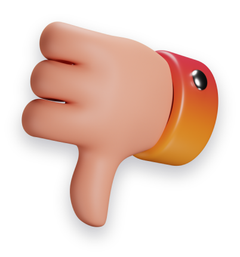

Propuesta para Clínica Odontoandrauss
Cinco sedes, una sola agenda.
Anuncios por ciudad, turnos por sede y una puerta en portugués para los pacientes de Brasil.

01 · Lo que vimos
25 años de confianza, casi sin marketing.
5
sedes en Gran Asunción y Tobatí
4,8 ★
en Google, con unas 169 reseñas
Lo bueno
Red familiar con radiología propia y pacientes que los recomiendan solos, también en portugués.
La oportunidad
No publican desde el 13/10, la web no deja agendar y un solo WhatsApp atiende a cinco sedes.
Datos públicos del 24/11/2026: Instagram, Facebook, TikTok, Biblioteca de anuncios de Meta, directorios que replican Google y odontoandrauss.com.py.

02 · Oportunidades
Tres oportunidades sobre la mesa.
1
Cero anuncios con 5 sedes
Cada sede podría tener su propia campaña por ciudad.
0 anuncios en Meta2
Una web que no agenda
Promos de 2023 y, para pedir turno, solo WhatsApp o teléfono.
Última promo: febrero 20233
Brasil sin puerta
Según BBC News Brasil, más de la mitad de las residencias de 2025 fueron para brasileños.
Nada en portuguésLikes por post en su cuenta: las colaboraciones rinden hasta 7 veces más
03 · La propuesta
Cada paciente, en la sede correcta.
Anuncio por ciudad
Ortodoncia e implantes en cada zona.

Página de sede
Dirección, horarios, especialistas y reseñas.
Turno en su sede
El WhatsApp pregunta la sede y agenda solo.

Seguimiento
Recordatorios y presupuestos que no se enfrían.
5 agendas en un CRM WhatsApp que deriva Landing en portugués Fichas de Google por sede
04 · Así se vería
Del anuncio al sillón, en español o en portugués.
ODONTOANDRAUSS
Dentista em Assunção para toda a família
Ortodontia, implantes e estética. 25 anos cuidando de sorrisos no Paraguai.
Nome
WhatsApp
Unidade mais próxima ▾
Agendar minha avaliação
★ 4,8 no Google · 5 unidades
Odontoandrauss WhatsApp
Hola, quiero consultar por ortodoncia21:40
Respuesta automática
¡Hola! ¿En qué sede te queda mejor?
1 Asunción · 2 San Lorenzo · 3 Luque · 4 Ñemby · 5 Tobatí21:40
321:41
En Luque tenemos lugar el martes 16:00 o el miércoles 10:30. ¿Cuál preferís?21:41
Asunción · 14
Ortodoncia8 turnos
Implantes6 turnos
San Lorenzo · 9
Ortodoncia9 turnos
Luque · 7
Implantes7 turnos
Em português · 5
Todas las sedes5 consultas
Turnos nuevos de la semana por sede, tratamiento y canal. Números de ejemplo.
Concepto preliminar. Textos finales en español y portugués según la aprobación de la clínica y las políticas de salud de Meta.
05 · Primeros 90 días
En 90 días, cada sede con su agenda llena.
Mes 1
Agendas en marcha
- 5 calendarios y WhatsApp que deriva
- Recordatorios de turno
- Medición en la web
Mes 2
Anuncios por ciudad
- Ortodoncia e implantes por zona
- Campaña en portugués
- Web por sede y tratamiento
Mes 3
Más pacientes por sede
- Más inversión donde agenda
- Seguimiento de presupuestos
- Informe por sede
Turnos por sede, cada semana Menos ausentismo Consultas en portugués, medidas aparte

06 · Inversión (USD)
Elijan cuánto acompañamiento quieren.
Agenda por sede
450 /mes
+ USD 2.400 de implementación
- CRM con 5 agendas
- Web por sede y landing en portugués
- Informe mensual por sede
Recomendada
Pacientes nuevos por sede
850 /mes
+ USD 2.400 de implementación
- Todo lo anterior
- Anuncios por ciudad y tratamiento
- Campaña en portugués
- 8 creatividades por mes
Red completa
1.400 /mes
+ USD 2.400 de implementación
- Todo lo anterior
- 8 reels por mes
- Una colaboración mensual con creadores
Garantía de puesta en marcha. Si a los 30 días de recibir los accesos las cinco agendas no están recibiendo turnos, el primer mes no se cobra.
Ejemplo: con un tratamiento promedio de USD 500, dos pacientes nuevos por mes en toda la red cubren la opción recomendada. Implementación 50 % al inicio y 50 % al entregar · mínimo 3 meses · CRM incluido · anuncios pagados directo a Meta (sugerido desde USD 500/mes para 5 ciudades) · honorarios de creadores aparte.
07 · Empecemos
Tres pasos y arrancamos.
1
Llamada de 20 min
Cómo agenda hoy cada sede.
2
Accesos
WhatsApp, web, Meta y Google, todo a nombre de la clínica.
3
Agendas en 30 días
Primer informe por sede al final del mes 1.
Julio Briones
Estrategia y anuncios
Mariam Neme
Ingeniera de software
julio@twoandhuman.com
WhatsApp +54 381 509 8972